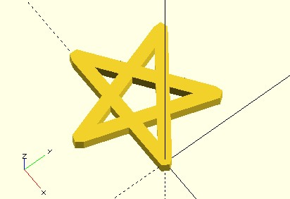
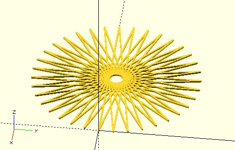

2D 海龜繪圖
March 11, 2022想像有隻海龜，只會前進與轉彎，在沙灘上爬行，爬過的路線都會留下痕跡，如果這隻海龜很特別，行走時有個規律，那它就會是隻有藝術感的海龜！
t2d 函式
如果想知道怎麼實作 2D 海龜繪圖，可以參考〈玩轉 p5.js〉的〈海龜繪圖〉，不過，會想使用海龜繪圖，應該是不太想知道怎麼實作吧…XD
如果想直接基於 2D 海龜來繪圖，dotSCAD 提供了 t2d 函式，例如，若海龜每次轉動 angle 角度，前進 length，重複進行個幾次，可以繪製出什麼圖案呢？
use <polyline_join.scad>
use <turtle/t2d.scad>
angle = 144;
length = 10;
width = 0.5;
// 每次要海龜重複執行的指令串
commands = [["turn", angle], ["forward", length]];
// 建立一隻海龜，預設位於原點，頭朝著 x 軸
t0 = t2d();
t1 = t2d(t0, commands);
polyline_join([t2d(t0, "point"), t2d(t1, "point")])
circle(width);
t2 = t2d(t1, commands);
polyline_join([t2d(t1, "point"), t2d(t2, "point")])
circle(width);
t3 = t2d(t2, commands);
polyline_join([t2d(t2, "point"), t2d(t3, "point")])
circle(width);
t4 = t2d(t3, commands);
polyline_join([t2d(t3, "point"), t2d(t4, "point")])
circle(width);
t5 = t2d(t4, commands);
polyline_join([t2d(t4, "point"), t2d(t5, "point")])
circle(width);
t2d 是個多功能函式，可以用來建立海龜，你可以使用 list 來組織要海龜重複執行的指令串，由於 OpenSCAD 不能改變 list 的狀態，t2d 執行後都會傳回建立一隻新海龜，包含了執行指令串後的狀態，可以透過指定 "point" 來取得海龜目前的座標位置，就上例而言，每次旋轉 144 度，前進 10 mm，重複 5 次，可以畫出五角星形：

想要可以指定任意次數怎麼辦？總不能像上面那樣重複寫出程式碼吧？因為 OpenSCAD 採用了函數式的概念，想要重複執行某些動作，就是使用遞迴，觀察以上的程式碼重複的部份，就是每次遞迴該做的事情：
use <polyline_join.scad>
use <turtle/t2d.scad>
angle = 170;
length = 100;
n = 40;
width = 0.5;
commands = [["turn", angle], ["forward", length]];
module repeat(t, commands, n, width) {
if(n > 0) {
new_t = t2d(t, commands);
polyline_join([t2d(t, "point"), t2d(new_t, "point")])
circle(width);
repeat(new_t, commands, n - 1, width);
}
}
repeat(t2d(), commands, n, width);
這會繪製出以下的圖形：

footprints2 函式
只不過，有沒有更簡單的方式呢？可以試著使用 footprints2 函式，它只接受兩種指令 "forward" 與 "turn"，函式會自動生成、管理海龜，如果你只是單純地想讓海龜前進、轉彎，記錄海龜走過的路徑，使用 footprints2 會簡單許多。例如：
use <polyline_join.scad>
use <turtle/footprints2.scad>
angle = 144;
length = 10;
width = 0.5;
path = footprints2([
["turn", angle],
["forward", length],
["turn", angle],
["forward", length],
["turn", angle],
["forward", length],
["turn", angle],
["forward", length],
["turn", angle],
["forward", length]
]);
polyline_join(path)
circle(width);
這會繪製方才看到的五角星形，想指定重複次數的話，只需要一點點變化：
use <polyline_join.scad>
use <turtle/footprints2.scad>
angle = 170;
length = 100;
n = 40;
width = 0.5;
commands = [["turn", angle], ["forward", length]];
path = footprints2([
for(i = [0:n]) each commands
]);
polyline_join(path)
circle(width);
這會繪製出方才看到的多角星形，是不是簡單多了呢？當然，t2d 可以做的事情比較多，這意謂著它可以做到更多 footprints2 做不到的事，像是一些碎形圖案，這就留到下一篇文件再來談了。